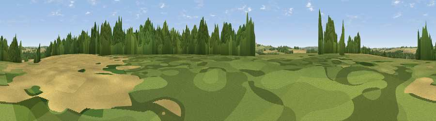

Gospel Oak
#36484 in England · top 66% of its area beats it · near Itchen AbbasThe view, rendered

A 360° render of this exact spot computed from the terrain model, tree cover and land cover — summer colours, afternoon light, calibrated against photographs of famous viewpoints. Real trees, hedges and buildings will differ in detail.
The panorama
Grey silhouette: terrain skyline in each direction (720 bearings, Earth curvature and refraction included). Dashed green: skyline with trees (+15 m) and buildings (+8 m) as obstacles. Blue strip: how far the ground is visible on each bearing.
Where the view opens
Wedge length = distance to the farthest visible ground on that bearing (vegetation-aware). Rings at 10, 25 and 50 km.
What fills the view
40% cropland · 32% woodland · 26% grassland · 2% built-up
Angular shares of the visible panorama (visual magnitude), not map area. Landscape diversity 0.50 (0–1 Shannon).
Key numbers
More beautiful places nearby
The staircase of upgrades: each row has a higher view potential than everything closer. Driving times are estimates from straight-line distance, calibrated against real road routing — check an actual route before setting out.
| Place | Direction | Drive | Score |
|---|---|---|---|
| Harley Hill | WSW · 2 km | ~6 min | 37.6 |
| Viewpoint near Chilcomb | SSW · 3 km | ~8 min | 63.9 |
| Beacon Hill | SE · 11 km | ~20 min | 71.7 |
| Viewpoint near Meonstoke | SE · 15 km | ~26 min | 74.8 |
| Viewpoint near Buriton | ESE · 20 km | ~34 min | 75.3 |
| Viewpoint near Buriton | ESE · 21 km | ~35 min | 80.0 |
| Beacon Hill | ESE · 30 km | ~46 min | 85.8 |
| Mottistone Down | SSW · 48 km | ~69 min | 87.2 |
51.07749, -1.23016 · source: osm peak · position refined by local search. Computed location — check access rights before visiting.